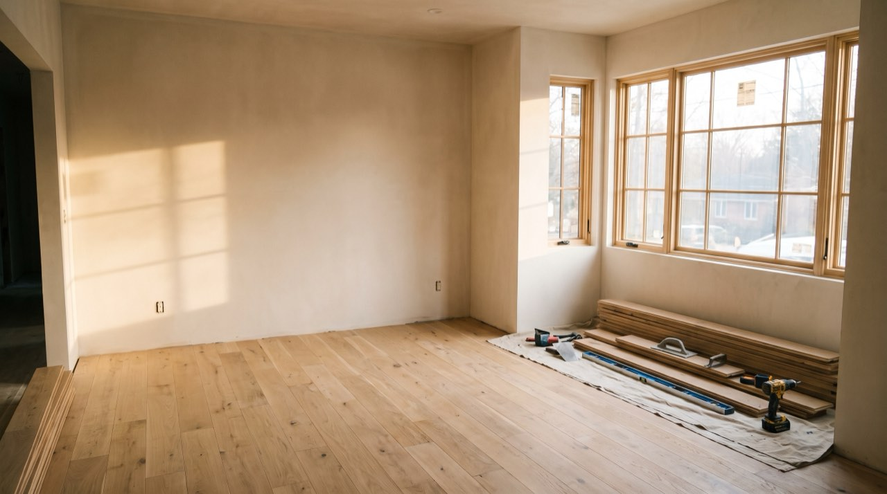
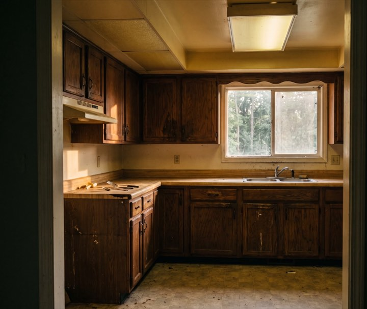
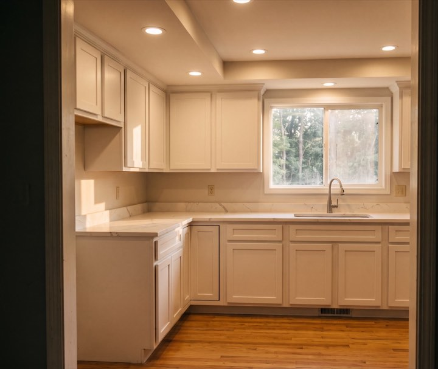
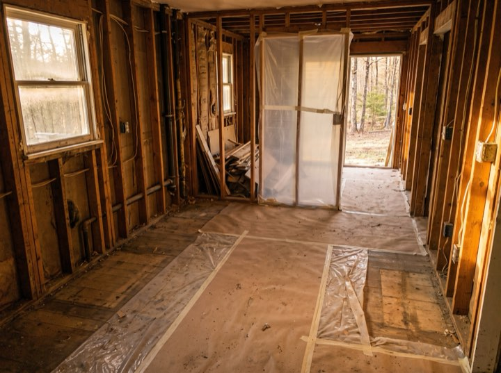
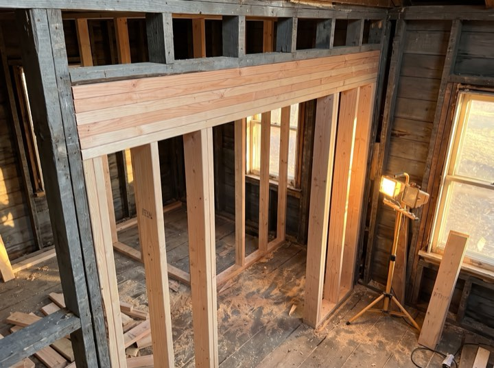
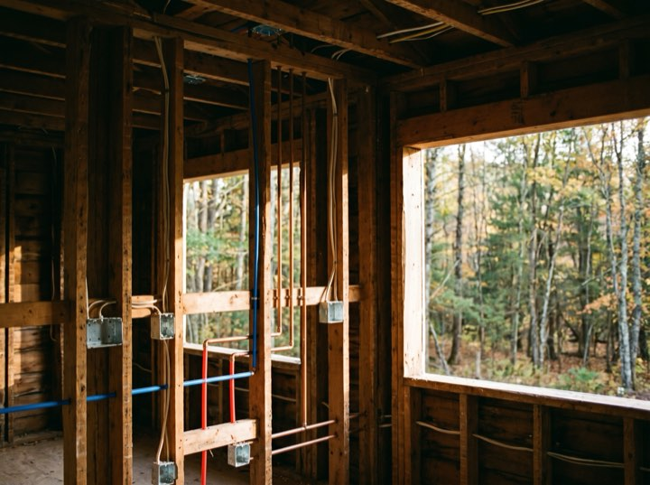

Whole-home renovation
Gut renovations and reconfigurations. Structural, mechanical and finish work under one contract and one project manager.
Whole-home renovation & additions
Whole-home renovations, additions and structural work, typically from $75,000. Before demolition starts you have a week-by-week schedule with every trade's dates on it, and we measure ourselves against it in public.

Services
We take on fewer projects than we could, because running four properly beats running nine badly.
Gut renovations and reconfigurations. Structural, mechanical and finish work under one contract and one project manager.
Second storeys, rear extensions and garage conversions, including the survey, engineering and permitting.
Usually where a bigger project starts. We'll tell you honestly whether it makes sense to do them alone or as part of something larger.
Load-bearing changes, foundation work and the permit process. This is the part that derails projects run by others.
Results
Process
What actually keeps homeowners awake isn't the number. It's not knowing which week the kitchen comes back.
We visit, listen, and tell you whether the idea works and roughly what it costs. Free, and sometimes the answer is don't.
Drawings, engineering where needed, and a line-item proposal. One number, with allowances stated openly.
We handle the city. You get a week-by-week schedule before anyone swings a hammer.
A named project manager, a written update every Friday against the published schedule, and a punch list we close rather than abandon.
On schedule
Demolition in week one, framing in two, rough-in and inspection by three. The schedule you were given before the hammer, kept.





That's the right time to call. Our calendar fills six to nine months out, and the design and permit stage takes longer than people expect.
Free consultations. Projects typically start at $75,000.